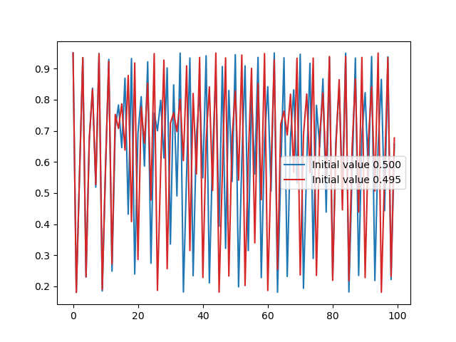

Jumping in
The obligatory “Hello, world”
Goal: Print Hello, world on the screen
Learning outcome: Compile and run a C program
Instructions:
- Open the Visual Studio Code app via https://ondemand.hpc.kuleuven.be if you have a VSC account
- Use a C environment on your local machine if available
- Create an app on https://replit.com/languages/c otherwise
Create a text file called hello.c containing:
#include <stdio.h>
int main() {
printf("Hello, world\n");
return 0;
}Compile and run it in a terminal as follows:
gcc hello.c -o hello
./hello
Tip
You can use another compiler such as clang if you prefer, some options can be different.
Temperature conversion
Goal:
- Print a table with temperatures in Fahrenheit and Celcius, the formula is \(^\circ C= \frac{5}{9}(^\circ F - 32)\)
Learning outcome:
- Exposure to variables, operators and loops
- Correct some common errors
Instructions:
- The training repository contains files needed for the exercises
Download the repository with
git clone https://github.com/stevenvdb/Scientific-C-for-programmers/Alternatively, visit https://github.com/stevenvdb/Scientific-C-for-programmers/ in a browser
- This exercise is located in
exercises/01_temperature_conversion
#include <stdio.h>
int main() {
float fahr, celcius;
float lower, upper, step;
lower = 0; // Lowest temperature in Fahrenheit
upper = 100; // Highest temperature in Fahrenheit
step = 10; // Increment of temperature
fahr = lower;
while (fahr < upper) {
celcius = (5 / 9) * (fahr - 32);
printf("%8.1f %8.1f\n", fahr, celcius);
fahr = fahr + step
}
return 0;
}Fix the problems (there are 3) to compile and run the code:
gcc convert_temperatures.c -o convert_temperatures
./convert_temperaturesLogistic map
- Simple formula to model evolution of population size \(N_n\):
\[ N_{n+1} = (a-bN_n)N_n \]
- Intuitive explanation:
- \(N_{n+1} \propto N_n\): increases with more offspring
- \(N_{n+1} \propto (a-bN_n)\): decreases because of competition
- Normalized version: \(x_{n+1} = r(1-x_n)x_n\) with \(0\leq x_n \leq 1\)
Logistic map
Goal:
- Print evolution of a population according to logistic map
Learning outcome:
- Write your first function
- Learn how to read input values
Instructions:
- Implement the
update_populationfunction - Read the initial population from input
- Check README.md in
exercises/02_logistic_map
Logistic map: solution
double update_population(double current_population, double growth_rate) {
return growth_rate * current_population * (1.0 - current_population);
}- A function can accept multiple typed arguments
- A function can at most return 1 typed value
- Mathematical expressions should be fairly intuitive
printf("Please enter the initial population: ");
scanf("%lf", ¤t_population);- Input can be read interactively with
scanf- Be careful, you should thoroughly check input
Logistic map: discussion
- Comparison of two populations with slightly different initial populations (\(r=3.8\))
- Initially, two populations stay relatively close
- After a certain time they completely decorrelate => example of a chaotic system
